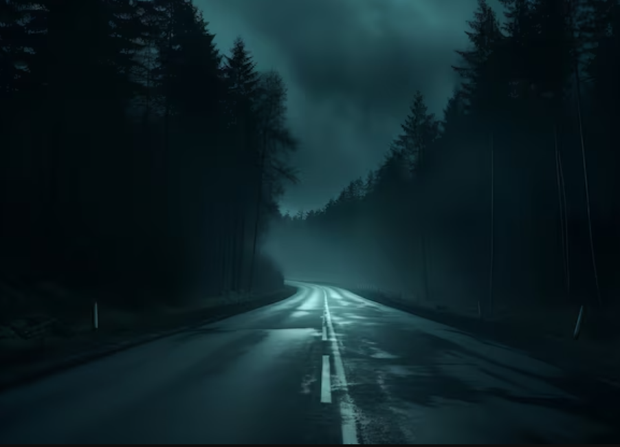

Returning home from a gaming convention, teenager Holly Gardner opts to take the forested back roads to avoid heavy traffic on the highway. Driving in the middle of the night, Holly stops at a gas station to refuel her dad's car but is warned by the attendant that if she sees a girl in a white or blue gown to keep driving. After filling up on gas, Holly continues her drive home but is forced to stop after finding the road blocked by two large logs that seem to have been intentionally put there.
Despite moving both logs off the road, Holly is suddenly unable to start the car and is unable to call for help due to having no cell phone service. Holly is reluctantly forced to hitchhike and is eventually picked up by a man named Jason, a man she had met earlier at the gas station. He gives Holly little time to pick her stuff up and put it in the trunk, Jason drops Holly off at a motel called the Roadway Inn that also offers roadside assistance but warns her to be careful of strangers before leaving. At the motel lobby, Holly pays the manager Joe for a room for the night and for roadside assistance. Joe gives Holly the key to Room 9 and arranges for his employee Tommy to take care of Holly’s car the next morning, but warns her not to wake the other guests. Holly enters her room but is shocked to find a man in her bathroom who turns out to be Tommy, who tells her to grab her stuff as he finishes cleaning the room. Tommy assures Holly that he’ll get her car in the morning but tells her that the room’s phone isn’t working before leaving.
Feeling uneasy about the events during the night and her current situation at the motel, Holly opts for a cup of coffee from a vending machine in order to stay awake. However, the coffee instead sedates Holly, and she begins losing consciousness, but she manages to return to her room before passing out. She later wakes up and is confronted by Joe, who accuses her of making noise and disturbing other guests. Holly brings up her experience with the coffee machine but is told that the motel doesn’t have one. Holly becomes further disturbed when she attempts to show Joe the machine, only to find it is no longer there.
Growing increasingly frustrated with Holly, Joe orders her to go back to the room and stay there but tells her to check the table by the television. Holly finds a bottle of pills in the table drawer that she takes with some water before returning to bed. Later, a strange man come by the room and attempts to get Holly to open the door by asking for help. The strange man becomes increasingly aggressive after Holly asks him to leave and begins breaking down the door. Holly quickly hides in the closet before the strange man breaks into the room and begins looking for her. As the strange man is searching the room, Holly can do nothing but hold her breath and watch in fear until Joe arrives and ambushes the strange man.
Despite everything that happened, Joe opts not to press charges, feeling that it would negatively affect the hotel’s reputation. Holly comes to believe that the town was home to a cult or drug ring and leaves as soon as Tommy returns with the car. After that night, Holly opts to never go on long road trips again, only take planes to any future conventions.